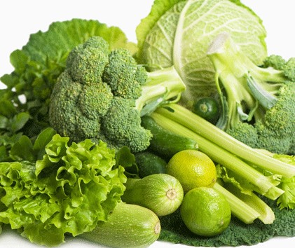

<style>
  @import url('https://fonts.googleapis.com/css2?family=Mitr&display=swap');
  @import url('https://fonts.googleapis.com/css2?family=Roboto+Flex:opsz@8..144&display=swap');
</style>

<ion-header>
  <ion-toolbar>
    <ion-title style="font-family: 'Mitr', sans-serif;font-size: 1em;text-align:center">
      <button [routerLink]="['/verduras']" ion-button icon-only
        style="border-radius: 50px;font-size: 27px; position: absolute; left: 10px;">
        <ion-icon name="chevron-back-sharp" size="small"></ion-icon>
      </button>
      Verduras
    </ion-title>
  </ion-toolbar>
</ion-header>


<ion-content>

  <div style="align-items:center; text-align: center; justify-content: center;display: flex; margin-top: 1em;">
    
  </div>

  <p class="titulo" style="font-family: 'Mitr', sans-serif;font-size: 1em;">V. Crucíferas</p>
  <p class="texto">Los vegetales crucíferos son vegetales de la familia Brassicaceae con muchos géneros, especies y
    cultivares que se cultivan para la producción de alimentos, como coliflor, repollo, col rizada, berro de jardín, bok
    choy, brócoli, coles de Bruselas, mostaza y vegetales de hoja verde similares.</p>
</ion-content>

<ion-tab-bar slot="bottom">
  <ion-tab-button tab="tab1" [routerLink]="['/tabs/tab1']">
    <ion-icon name="barbell"></ion-icon>
  </ion-tab-button>

  <ion-tab-button tab="tab2" [routerLink]="['/tabs/tab2']">
    <ion-icon name="stats-chart"></ion-icon>
  </ion-tab-button>

  <ion-tab-button tab="tab3" [routerLink]="['/tabs/tab3']">
    <ion-icon style="color: white;" name="book"></ion-icon>
  </ion-tab-button>

  <ion-tab-button tab="tab4" [routerLink]="['/tabs/tab4']">
    <ion-icon name="person"></ion-icon>
  </ion-tab-button>
</ion-tab-bar>